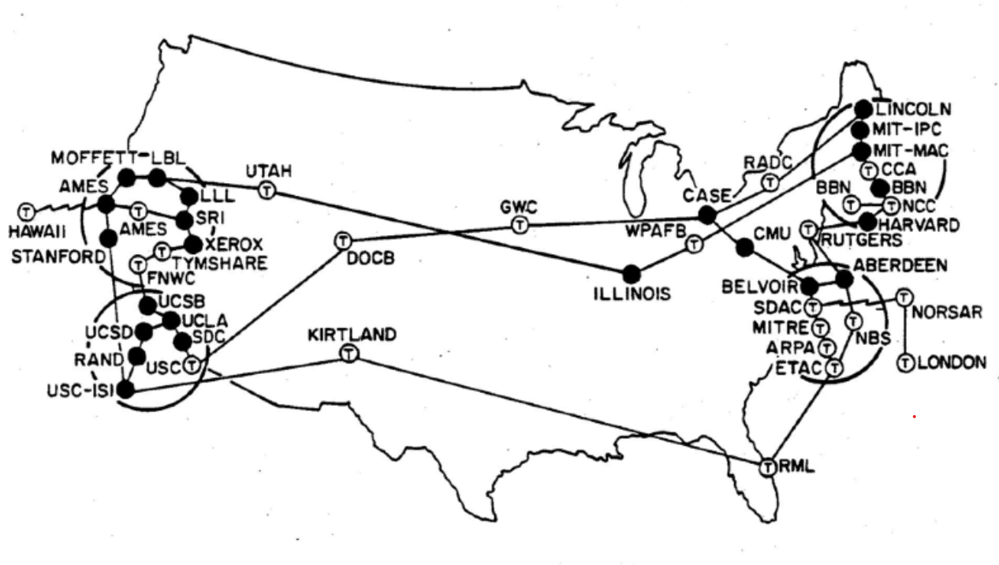
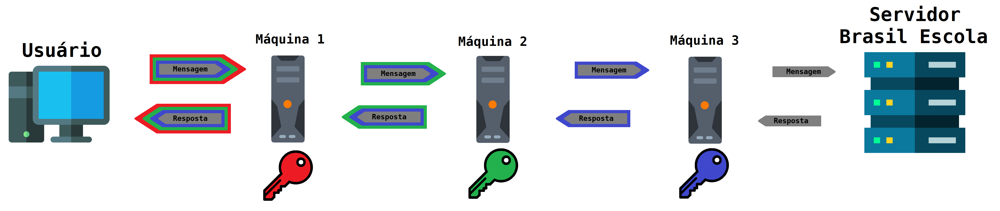

Como Surgiu A Internet?
Essa tecnologia surgiu depois de várias pesquisas militares feitas na Guerra Fria. O processo de
desenvolvimento
da internet durou décadas, e ainda está continuando. Mas, comparado com outros avanços tecnológicos na
história
humana, esse processo não foi tão duradouro. Com isso, iremos começar com a primeira rede de larga escala: a
ARPANET.
A ARPANET foi uma rede de computadores desenvolvida em 1969 pela Agência de Projetos de Pesquisa Avançadas
(Defense Advanced Research Projects Agency, DARPA) para transmitir dados militares confidenciais e
interligar
departamentos de pesquisa estadunidenses. Esta rede foi a primeira a implementar o protocolo de internet
TCP/IP (Transmission Control Protocol/Internet Protocol) tornando-se o ponto de origem e a base
técnica
da rede global de milhões de eletrônicos; a base técnica da internet.

A ARPANET cresceu rapidamente. Somente um ano depois, em 1970, a ARPANET chegou a costa leste dos Estados
Unidos.
Dois anos depois, a NORSAR, uma fundação estabelecida em 1968 por causa de um acordo feito entre a Noruega e
os
EUA para detectar terremotos e explosões nucleares, foi ligada á ARPANET por uma ligação de satélites
transatlânticos, fazendo que a Noruega seje o primeiro lugar fora dos Estados Unidos a ser conectado à rede.
A Espinha Da Internet
Ao contrário de o que você esteja pensando, a ARPANET não é a espinha da internet moderna. Sim, ela é e foi
crucial para o surgimento dela, mas a ARPANET não é e nem foi a espinha da internet. Esse prêmio pertence à
NSFNET.
A NSFNET, criada em 1985, foi um programa de projetos patrocinados pela National Science Foundation (NSF)
criada
para vincular pesquisadores aos centros de supercomputação financiados pela organização, para promover
pesquisas
avançadas e redes de educação nos Estados Unidos. O programa criou várias redes nacionais de computadores
backbone - infraestrutura principal que transporta grandes volumes de dados - para apoiar essas
iniciativas.

A NSFNET iniciou operações em 1986 usando o protocolo TCP/IP. Os sites estavam interconectados com conexões
com
uma taxa de bits de 56 kbit/s alugados. Alguns minicomputadores com roteamento e software de manuntenção,
chamados de Fuzzballs, foram usados como os roteadores da rede pois já usavam o protocolo TCP/IP, e
são
os primeiros roteadores usados na internet.
Tempo passou, a rede cresceu e, eventualmente, as redes regionais não conseguiam aguentar a alta
transferência de
dados, e ficaram criticamente congestionada. Em 1987, a NSF criou uma nova solicitação para aprimorar e
expandir
a rede NSFNET. Eventualmente, a rede foi expandida para incluir 13 nós interconectados por sistemas
T-carrier capazes de transportar 1,5 Mbits/s, chamados de T1.
Em 1989, um cientista da computação chamado Tim Berners-Lee começou o desenvolvimento do protocolo
HTTP,
para ajudar a desenvolver e a adoção de duas outras idéias dele: o World Wide Web (WWW), um
sistema de arquivos e recursos interconectados, acessados e executados por meio da internet, e o
WorldWideWeb, conhecido por ser o primeiro navegador web. Para ver mais sobre a
história
dos navegadores, clique aqui.
Um ano depois, a ARPANET foi desativada, pois, desde 1986, a NSFNET era a rede principal em universidades e
entidades do governo.
A National Science Foundation somente permitia agências governamentais e universidades a terem acesso a rede
NSFNET. Porém, isso mudou quando o primeiro fornecedor de acesso à internet de forma comercial, The World,
foi
estabelecido em 1989. A NSF, daquí em diante, permitiu o acesso à rede para fins comerciais, porém com
restrições. Entretanto, em 1991, a NSF removeu as restrições, e o mercado de fornecedores comerciais de
acesso à
internet cresceu rapidamente.
Em abril de 1995, a rede NSFNET foi fechada, pois uma nova arquitetura de rede foi desenvolvida para
possibilitar
a globalização da internet e a interconecção entre pessoas que estavam quilômetros de distância entre si.
Essa
outra rede é a atual internet.
Uma Rede Privada
No mesmo ano, um trio de pessoas que trabalhavam no Laboratório de Pesquisa Naval dos Estados Unidos (U.S.
Naval
Research Laboratory; NRL) desenvolveram e criaram o primeiro protótipo do onion routing, uma
técnica de roteamento anônimo em uma rede de computadores. Essa tecnologia foi desenvolvida para proteger as
comunicações entre agências de inteligência estadunidenses. Três anos depois, foi refinada pela DARPA e
patentada pela marinha.
Em 2002, os cientistas da computação Roger Dingledine, Nick Mathewson e Paul Syverson - um dos
desenvolvedores do
roteamento onion - lançaram a versão alfa da rede Tor, que se tornaria a maior implementação do
roteamento onion e a mais conhecida. O lançamento dessa rede para o público ocorreu um ano depois.
Suponha que você, enquanto usa uma rede que usa essa técnica de roteamento, deseja acessar a página do Brasil
Escola. Para você acessar o site, a mensagem terá que passar pelos seguintes processos:
- A mensagem é inicialmente criptografada por múltiplas camadas de encripção, correspondente a uma cebola,
que
somente podem ser desencriptadas com uma chave criptográfica. Nessa situação hipotética, suponha que a
mensagem foi criptografada três vezes.
- K1: a primeira encripção, a camada mais "exterior";
- K2: a segunda encripção;
- e K3: a terceira encripção, a camada mais "interior".
- A sua máquina manda a mensagem a uma outra máquina, que somente remove a camada K1 e manda-a para a
próxima
máquina.
- A segunda máquina intermediária - máquinas entre o usuário e o servidor - remove a camada K2 e manda a
mensagem para a próxima.
- A terceira máquina remove a camada K3 e, depois de ler a mensagem não-criptografada, envia-a para o
servidor.
- O servidor lê a mensagem e manda-a de volta para a terceira máquina.
- Essa máquina criptografa a mensagem e manda-a para a próxima. Esse processo se repete até a mensagem
chegar
a você. Agora, você pode navegar a página do Brasil Escola.

O usuário que manda o dado fica anônimo pois os intermediários somente sabe a localização do nó imediatamente
antecessor e do nó imediatamente sucessor. Se o usuário estiver usando o navegador Tor, terá também outros
fatores que dificultam a desanonimização do usuário.
Essa técnica não é perfeita. Ela é lenta e não previne alguém ou algo de desanonimizar quem estiver usando-a,
mas
ainda sim é uma forma altamente segura de transmitir dados e uma forma efetiva de se anonimizar na rede.